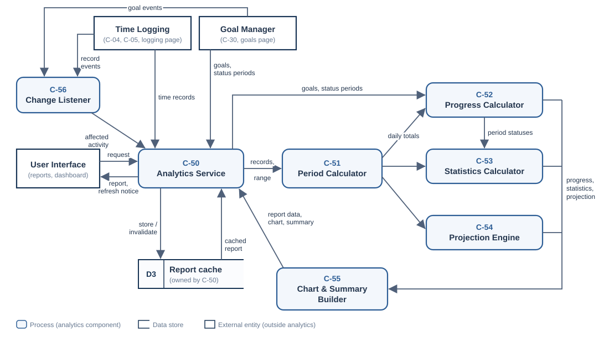
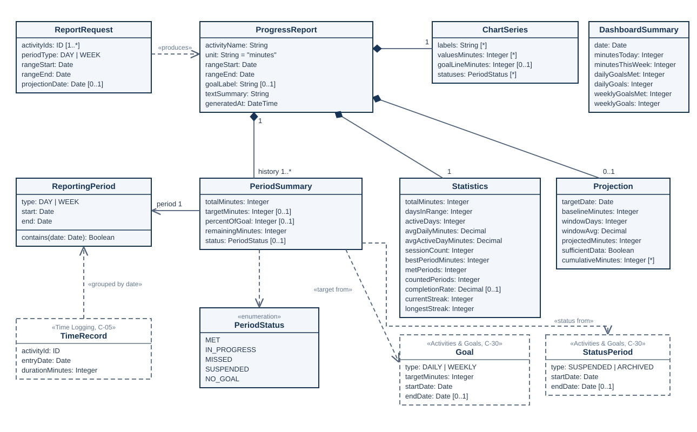
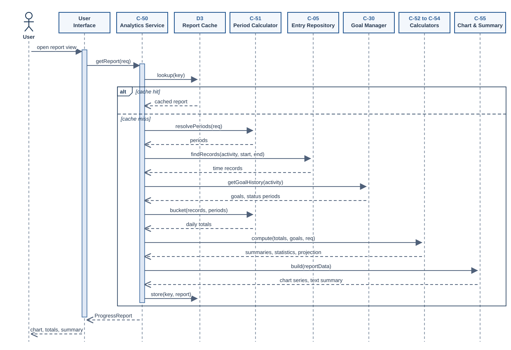
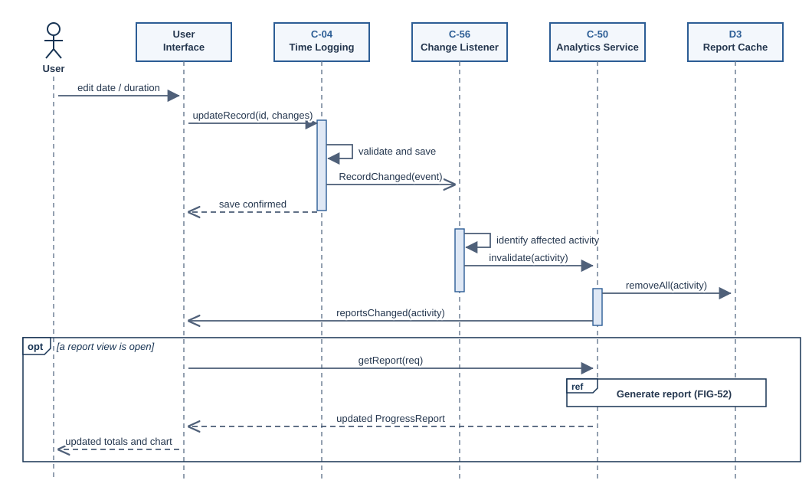

Progress Tracking & Analytics
This page explains how TEMPO turns saved time records and goals into progress totals, goal completion status, averages, historical statistics, projections, and charts. It defines the calculation rules, the components that perform them, and how reports stay correct when records or goals change.
1. Analytics Overview
The analytics subsystem is read-only. It never creates or edits time records or goals. It reads them from the time logging and goal management components, calculates results, and returns a single report object that the user interface displays. The subsystem addresses FR-14 to FR-18 and FR-20, reflects the effects of FR-05 to FR-08 and FR-19 on reports, and supports NFR-02, NFR-04, NFR-05, NFR-06, and NFR-07 from the requirements page.
1.1 Analytics components
The analytics work is split into seven components so that each calculation rule lives in exactly one place. Component numbers C-50 to C-56 are reserved for this page.
| ID | Component | Responsibility | Requirements |
|---|---|---|---|
| C-50 | Analytics Service | Single entry point for report requests. Validates the request, including that the activity belongs to the requesting user when accounts are used (NFR-07), checks the report cache, calls the other analytics components in order, and returns a ProgressReport. Also builds the cross-activity DashboardSummary (Section 2.7) and combined reports for several activities (Section 2.8). |
FR-14 to FR-18, NFR-06, NFR-07 |
| C-51 | Period Calculator | Defines day and week boundaries, clips date ranges, identifies tracked days (days not suspended or archived), and groups time records into daily totals in minutes. | FR-06, FR-07, FR-14, FR-16, FR-17, FR-19, NFR-02 |
| C-52 | Progress Calculator | Finds the goal in effect for each period, calculates the period target (prorated for untracked days), percent of goal, remaining time, and period status. | FR-05 to FR-07, FR-14, FR-19, FR-20 |
| C-53 | Statistics Calculator | Calculates range totals, daily averages, best period, goal completion rate, and streaks. | FR-16 |
| C-54 | Projection Engine | Estimates cumulative time by a future date from the recent daily average. | FR-17 |
| C-55 | Chart & Summary Builder | Builds chart data series, report labels, and the written summary from the calculated results. | FR-15, NFR-02, NFR-04, NFR-05 |
| C-56 | Change Listener | Receives record and goal change events, invalidates cached reports for the affected activity, and tells the user interface to refresh. | FR-05 to FR-08, FR-18, FR-19 |
1.2 External dependencies
Analytics depends on components designed on other pages. The table lists what this design expects from each one, so the pages can be checked against each other.
| Component | Design page | What analytics needs |
|---|---|---|
| Time Logging Service (C-04) and Time Entry Repository (C-05) | Time Logging & Storage | C-05 returns the records of an activity within a date range, with each record's entryDate and durationMinutes (whole minutes). C-04 publishes a RecordChanged event (activity, record, old date, new date) after every create, edit, or delete (see logging page, Section 3.3). |
| Goal Manager (C-30) | Activities & Goals | Return every goal of an activity (type, target in minutes, start date, and end date, where the current goal has no end date) and the activity's StatusPeriod records (SUSPENDED or ARCHIVED, with start and end dates). Publish a GoalChanged event after every goal revision, suspend, resume, archive, restore, or delete (see goals page, Section 3.1). |
| User Interface | User Interface | Send a report request (one activity, several activities, or all activities; day or week view; date range; optional projection date), and a dashboard summary request for the dashboard's progress summary. Draw the returned chart series, show the written summary, and request a new report when it receives reportsChanged. |
1.3 Data flow
FIG-50 shows how data moves through the analytics components. A request from the user interface enters C-50, which obtains the time records from the Time Entry Repository (C-05) and the goals and status periods from the Goal Manager (C-30). C-50 passes the records and the requested range to C-51, which turns them into daily totals. C-52, C-53, and C-54 each work from those daily totals. C-52 also receives the goals and status periods, and it passes the period statuses to C-53 for the completion rate and streaks. C-55 combines all of the results into one report and returns it to C-50, which stores it in the report cache (D3) and sends it to the user interface. Separately, C-56 receives record and goal change events and tells C-50 which activity is affected. C-50 then invalidates the cache and sends a refresh notice to the user interface, so stale reports are never shown.
The time logging components (C-04, C-05) and the Goal Manager are external entities because they belong to other subsystems, which own their data stores. Analytics reads their data only through C-50. The arrows show where data goes; the order of the calls that move it is shown in FIG-52 and FIG-53.

2. Calculation Rules
Each rule below is implemented by one component and is precise enough to check by hand, which is how FR-14, FR-16, and FR-17 are verified on the requirements page.
2.1 Units and reporting periods
All calculations use whole minutes, the same unit in which time records are stored. Averages are kept as decimals during calculation and rounded to the nearest minute only for display. Durations are shown as hours and minutes, for example 1 h 15 min.
C-51 defines two reporting periods:
- Day: one calendar date. A record belongs to the calendar date of the session as the user entered it. The log forms on the User Interface page also capture a time of day, but analytics groups records by date only, so a session that crosses midnight counts on its starting date and day membership never depends on time zones.
- Week: Monday through Sunday, following ISO 8601. For example, the week containing Thursday, October 22, 2026 runs from October 19 to October 25.
A date range is always clipped so that it ends no later than today and starts no earlier than the activity's first day (its creation date or its earliest record, whichever comes first). Days that have not happened yet, or that came before the activity existed, would otherwise lower averages.
A tracked day is a day that is not covered by a SUSPENDED or ARCHIVED status period of the activity. (The interface shows the SUSPENDED status to users as "Paused".) An open status period (no end date yet) covers every day from its start through the end of the current period, because no resume date is known. Untracked days are left out of targets, averages, and the projection window (DD-57), but time logged on them still counts in totals and charts. Every other component uses C-51 for these rules, which keeps goal comparisons, totals, averages, and charts consistent as required by NFR-02.
2.2 Period progress and goal completion
For a period P, C-52 calculates:
total(P) = sum of durationMinutes for all records of the activity dated within P
tracked(P) = number of tracked days in P (Section 2.1)
target(P) = target in whole minutes, from the table below
percent(P) = floor(total(P) / target(P) × 100)
remaining(P) = max(0, target(P) − total(P))The goal in effect on a day d is the goal whose start date is on or before d and whose end date is empty or later than d. When a goal is edited, the Goal Manager ends the old goal and starts the new one on the same day (FIG-32 on the goals page), so on the day of the edit the new goal is in effect. The reference day is the last day of the period for past periods, and today for the current period. The interval of the goal in effect on the reference day decides which rule below applies.
| Period and goal | target(P) |
|---|---|
| Day, daily goal | The daily target in effect on that day. |
| Week, weekly goal | The weekly target in effect on the reference day × tracked(P) / 7, rounded to the nearest minute. A 420-minute weekly goal with two suspended days has a target of 300 minutes that week. |
| Week, daily goal (shown for information) | The sum, over the tracked days of the week, of the daily target in effect on each day. If a weekly goal was still in effect on some days (the interval changed during the week), those days use the daily target in effect on the reference day. A 30-minute daily goal raised to 60 minutes on Wednesday gives 30 + 30 + 60 × 5 = 360 minutes. |
| Day, weekly goal | None. The day view shows the day's total together with the week-to-date total and the time remaining for the week, and the day carries no status. Dividing a weekly goal by seven would mark days as missed even though the user planned fewer, longer sessions. |
Percent is rounded down so that 100% appears only when the goal is actually met. It is not capped, so a user who studies 9 hours against a 7-hour goal sees 128%. The progress bar is capped at full width.
Each period that has a target rule receives one status:
| Status | Rule |
|---|---|
NO_GOAL
|
No goal is in effect on the reference day (days before the first goal), or tracked(P) = 0 and none of the untracked days is suspended (the activity was archived for the whole period). |
SUSPENDED
|
tracked(P) = 0 and at least one day of P is suspended. A week that is only partly suspended is not SUSPENDED; it keeps a target prorated to its tracked days. |
MET
|
total(P) ≥ target(P). A current period becomes MET as soon as the target is reached. |
IN_PROGRESS
|
The current period, with total(P) < target(P). |
MISSED
|
A past period, with total(P) < target(P). |
2.3 How goal changes affect progress
Goals can be revised, and activities can be suspended, resumed, archived, restored, or deleted (FR-05 to FR-08, FR-19). Following the goals design, analytics treats a goal as a series of dated goals rather than a single current value, and reads the activity's status periods to find suspended and archived days:
- Revised target or interval: the Goal Manager closes the old goal and starts a new one on the day of the edit (DD-30). Past periods keep the target that was in effect at the time, so raising a goal does not turn last month's successes into failures (FR-20). The current period uses the new target immediately, because today is its reference day.
- Suspended: suspended days are not tracked days. A period with no tracked days is SUSPENDED; it is left out of the completion rate and does not break a streak. A partly suspended week keeps a target prorated to its tracked days (Section 2.2). Suspended days are also left out of averages and the projection window (Sections 2.4 and 2.5). Time logged on a suspended day still counts in totals and charts.
- Archived and restored: archived days are not tracked days either, so they do not lower targets or averages. A period with no tracked days because of archiving shows NO_GOAL, which ends a streak, because archiving means the user stopped pursuing the goal. Earlier periods and all time records remain viewable as history. Restoring the activity (FR-19) closes the status period, so later days are tracked again and compared with the current goal.
- Deleted: deleting an activity removes its goals and time records (FR-08). No report can be requested for it afterwards, and its cached reports are removed (Section 4.2).
This relies on the goal design keeping every goal with its start and end dates, and every status change as a dated StatusPeriod (see DD-30 and DD-31 on the goals page, and DD-52 below). A GoalChanged event causes the same cache invalidation as a record change (Section 4.2).
2.4 Totals, averages, and historical statistics
For a selected date range R (after clipping), C-53 calculates:
totalMinutes = sum of daily totals in R
daysInRange = number of tracked days in R
trackedMinutes = sum of daily totals on the tracked days in R
activeDays = number of tracked days in R with at least one record
avgDailyMinutes = trackedMinutes / daysInRange (none if daysInRange = 0)
avgActiveDayMinutes = trackedMinutes / activeDays (0 if activeDays = 0)
sessionCount = number of records dated within R
bestPeriodMinutes = largest total(P) for any day or week P in R
metPeriods = number of MET periods in R
countedPeriods = number of MET or MISSED periods in R
completionRate = metPeriods / countedPeriods (none if countedPeriods = 0)The average required by FR-16 is avgDailyMinutes, which divides by every tracked day in the range, including days with no sessions. Suspended and archived days are left out of both the minutes and the days, as the goals design specifies for suspended days, so a planned break does not lower the average. Without any untracked days, trackedMinutes equals totalMinutes. The written summary always states how many days were counted (Section 5.2). The average per active day is shown as a secondary value because it answers a different question: how long a typical session day is.
The completion rate and streaks are counted in the unit of the goal, whichever view is shown: days for a daily goal and weeks for a weekly goal. The informational week status of a daily goal is never counted. If the interval changed inside R, each day under a daily goal counts as a day, each week whose reference day falls under a weekly goal counts as a week, and the two counts are added. The dashboard reports daily and weekly goals separately in the same way (Section 2.7). The interface labels the completion rate "Adherence Rate", and the activity page shows metPeriods with the rate as the number and percentage of targets achieved.
Historical statistics also include two streaks. The current streak counts consecutive MET periods ending at the most recent completed period, plus the current period if it is already MET. The longest streak is the longest such run in the range. An IN_PROGRESS current period does not break the streak, and SUSPENDED periods are skipped without breaking it. Periods with NO_GOAL end a streak.
2.5 Projections
FR-17 requires an estimate of cumulative recorded time by a future date. C-54 uses a linear projection based on the trailing daily average:
baselineMinutes = all recorded minutes for the activity up to and including today
windowDays = min(28, tracked days from the activity's first day through yesterday)
windowAvg = minutes recorded on the last windowDays tracked days up to yesterday / windowDays
daysAhead = days from tomorrow through the target date, inclusive
projectedMinutes = baselineMinutes + round(windowAvg × daysAhead)The window ends yesterday because today is usually not finished, and a partial day would pull the rate down. Today's minutes are still part of the baseline. Suspended and archived days are skipped when the window is chosen, so a break does not pull the estimate down. The projection assumes every future day is tracked; if the activity is currently suspended, the summary says the estimate assumes tracking resumes tomorrow. The projection is shown only when windowDays is at least 7. Otherwise the report sets sufficientData to false and the interface shows "Not enough history for an estimate." The result is always labeled as an estimate, and the summary states the average it was based on, for example "at your recent pace of 42 min per day."
A 28-day window covers four full weeks, so weekday and weekend habits are both represented, and it still reacts within a few weeks when habits change. A target date earlier than tomorrow is rejected by C-50 as an invalid request.
For the projection graph (FIG-11 on the interface page), the Projection also carries the running cumulative total for each day of the selected history range. The interface draws that series as a solid line, and a dashed straight line from baselineMinutes today to projectedMinutes on the target date.
2.6 Worked example
This example extends the student scenario on the requirements page. The Study activity has a weekly goal of 7 hours (420 minutes). Today is Thursday, October 22, 2026, so the current week runs from Monday, October 19 to Sunday, October 25.
| Date | Records | Daily total |
|---|---|---|
| Mon, Oct 19 | 45 min (morning), 30 min (evening) | 75 min |
| Tue, Oct 20 | 60 min | 60 min |
| Wed, Oct 21 | none | 0 min |
| Thu, Oct 22 | 50 min | 50 min |
- Week progress: total = 185 min, percent = floor(185 / 420 × 100) = 44%, remaining = 235 min (3 h 55 min), status IN_PROGRESS.
- Averages for Oct 19 to Oct 22: no days are suspended or archived, so daysInRange = 4, activeDays = 3, average daily = 185 / 4 = 46.25, displayed as 46 min. Average per active day = 61.7, displayed as 62 min.
- After an edit: the student corrects Monday's morning session from 45 to 60 minutes. The week total becomes 200 min (47%), remaining becomes 220 min, and the average daily becomes 50 min.
- Projection: suppose the all-time total through today is 2,400 min and the 28 days from September 24 to October 21 (ending yesterday) contain 1,176 min, so windowAvg = 42 min/day. For a target date of November 30, 2026, daysAhead = 39 (Oct 23 to Nov 30). The estimate is 2,400 + 42 × 39 = 4,038 min, or about 67 h 18 min.
- Suspension: if the student had suspended Study on Monday and Tuesday of this week, the week target would be 420 × 5 / 7 = 300 min, so the 185 min recorded would be 61%, with 115 min remaining.
2.7 Dashboard summary
The dashboard on the User Interface page shows four numbers across all activities: time logged today, time logged this week, daily goals achieved, and weekly goals achieved. C-50 builds these as one DashboardSummary from the same per-activity period summaries that the activity cards use (DD-58):
minutesToday = sum of today's totals over the user's activities that are not archived
minutesThisWeek = sum of the current week's totals (Monday through today) over the same activities
dailyGoals = activities whose goal in effect today is daily and for which today is a tracked day
dailyGoalsMet = those activities whose day period for today is MET
weeklyGoals = activities whose goal in effect today is weekly and whose current week has a tracked day
weeklyGoalsMet = those activities whose current week is METThe interface shows the goal counts as "1 of 2 daily goals" and "0 of 1 weekly goals". For example, with the Study activity from Section 2.6, a Reading activity with a 30-minute daily goal and 35 minutes logged today, and a Piano activity with a 20-minute daily goal and nothing logged today, the summary shows 85 minutes today, 1 of 2 daily goals, and 0 of 1 weekly goals. Only the requesting user's activities are included (NFR-07).
2.8 Reports across several activities
The Reports & Statistics page (FIG-11 on the interface page) can show one activity, several activities, or all activities, filtered by status. For a selected set of activities A and a range R, C-50 calculates each activity's statistics as in Section 2.4 and then combines them (DD-59):
totalMinutes(A) = sum of totalMinutes over the activities in A
sessionCount(A) = sum of sessionCount
avgDailyMinutes(A) = sum of avgDailyMinutes (time per day across these activities)
completionRate(A) = sum of metPeriods / sum of countedPeriodsAdding the per-activity daily averages keeps each activity's own tracked days, so an activity created or paused partway through the range does not distort the others. When every activity was tracked for the whole range, the result equals the combined total divided by the number of days. For example, 48 h 30 min over the last 30 days is 2,910 / 30 = 97 min, shown as 1 h 37 min, as in FIG-11.
With several activities selected, the time view of the graph shows the summed totals for each bucket without a goal line, because daily and weekly goals cannot be added into one target. The adherence view shows completionRate(A) for each bucket, counting the goal periods that end in that bucket. The Activity Statistics table lists one row per activity with its total, current goal, average daily time, and completion rate. Projections are always for a single activity. The report label names the selected activities, or reads "All activities", so NFR-05 is still met.
3. Report Data Model
FIG-51 shows the objects that analytics produces. They are computed when a report is requested and are not saved to permanent storage (see DD-50). A ReportRequest names one or more activities (Section 2.8) and produces one ProgressReport, which contains:
- one
PeriodSummaryper day or week in the range, each tied to aReportingPeriodand aPeriodStatus, - one
Statisticsobject with the values from Section 2.4, - an optional
Projection, present only when the request includes a projection date, - one
ChartSeriesholding the values that the interface draws.
A PeriodSummary has no status when a weekly goal is shown in the day view (Section 2.2), so its status is optional. DashboardSummary is a separate result that holds the cross-activity values from Section 2.7.
The report-level fields activityName, rangeStart, rangeEnd, unit, and goalLabel are what every report must display under NFR-05. TimeRecord, Goal, and StatusPeriod are drawn with dashed outlines because they are owned by the time logging and goal designs (Goal and StatusPeriod match FIG-30 on the goals page). Only the attributes analytics reads are shown.

4. Component Interactions
Two interactions cover the analytics behavior: generating a report, and keeping reports correct after data changes.
4.1 Generating a progress report
When the user opens a report, the interface sends a ReportRequest to C-50 (FIG-52). When individual accounts are used, C-50 first rejects a request for an activity that does not belong to the requesting user (NFR-07). It then checks the report cache. The cache key combines the user, the selected activities, the view, the date range, the projection date, and today's date, so a cached report is never shown to another user and never survives past midnight. On a cache miss, C-50:
- asks C-51 to resolve the clipped range into days or weeks,
- reads the activity's time records for the range from the Time Entry Repository (C-05), plus earlier records when a projection or all-time total is needed,
- reads the activity's goals and status periods from the Goal Manager (C-30),
- asks C-51 to group the records into daily totals,
- passes the daily totals, goals, and status periods to C-52, C-53, and C-54,
- sends all results to C-55, which adds the chart series and written summary,
- stores the finished report in the cache and returns it to the interface.

4.2 How changing entries affects statistics
FR-18 requires totals, charts, and statistics to be recalculated whenever a time record is created, edited, or deleted. Because reports are always calculated from the saved records (DD-50), the only stale data that can exist is a cached report. FIG-53 shows how it is removed. After the Time Logging Service (C-04) saves a change, it publishes RecordChanged. C-56 identifies the activity and tells C-50 to remove every cached report that includes that activity. C-50 then notifies the interface, and an open report view requests a fresh report, which is generated as in FIG-52. Goal and activity status changes follow the same path with GoalChanged. When an activity is deleted, its time records are deleted with it (FR-08, FR-18); C-56 removes all of its cached reports in the same way, and the interface closes any open report for that activity instead of requesting it again. Any change to any of the user's activities also removes the cached dashboard summary, because its totals and goal counts cover every activity.

The table shows which results each kind of change affects. Here d is a record's date.
| Change | Periods affected | Results that change |
|---|---|---|
| Create, delete, or change the duration of a record | The day and week containing d | Period total, percent, remaining, and possibly status. Totals and averages of any range containing d. Completion rate and streaks if a status changes (for example, IN_PROGRESS to MET, or MET to MISSED). The all-time total, which is the projection baseline, and the projection's window average if d falls inside the projection window. The dashboard summary. |
| Change a record's date from d1 to d2 | The days and weeks containing d1 and d2 | The old period loses the duration and the new period gains it. The all-time total is unchanged, but the projection can change if only one of the dates is inside the projection window. |
| Revise a goal target or interval | The current period and later | Target, percent, remaining, and status from the effective date onward. Past periods keep their previous target (FR-20, DD-52). |
| Suspend, resume, archive, or restore an activity | Periods whose reference day is affected | The set of tracked days changes, so the prorated targets of partly affected weeks, percent, remaining, and status change, and periods with no tracked days become SUSPENDED or NO_GOAL (Section 2.3). Averages and the projection window change because they count tracked days only. Recorded-time totals do not change. |
| Delete an activity | All periods of that activity | The activity, its goals, and its time records are removed (FR-08), so all of its reports are removed. Reports for other activities do not change. |
5. Charts and Summaries
C-55 produces chart data and text, not images. The interface draws the charts (see the User Interface page). Keeping drawing out of analytics lets the interface choose the charting approach without affecting any calculation.
5.1 Chart types
- Current period progress bar: the total against the target, with the percent and the time remaining as text next to the bar. FR-14.
- History chart: one value per day (default: the last 30 days, as in FIG-11) or per week (default: the last 12 weeks), using the totals from the period summaries. The interface draws it as a bar or line graph, as selected with the graph controls on the activity page. FR-15.
- Goal line: a reference line at each bucket's target(P), including any proration for untracked days. If the target changed within the range, the line steps to the new value at the effective date, so each bar is compared with the target that applied to it.
- Status marking: each bar carries its status, labeled for users as met, missed, or paused. The status is shown with a text label or pattern as well as color, so it does not depend on color perception.
The chart values come from the same PeriodSummary objects as the displayed totals, so a bar always agrees with the number shown for that period (NFR-02).
5.2 Written summaries and report labels
Every report includes a written summary built from a fixed template, so screen-reader users get the same information as the chart (NFR-04). For the worked example in Section 2.6, the summary reads:
"Study, week of Oct 19 to Oct 25, 2026: 3 h 5 min recorded of a 7 h weekly goal (44%). 3 h 55 min remaining. Average 46 min per day over 4 days."
When the range contains untracked days, the template adds a sentence such as "2 paused days excluded; goal adjusted to 5 h," so the user can see why the target or the number of days differs from the calendar. The summary and the report header always name the activity, the date range, the unit, the recorded total, and the goal (or "No goal"), which satisfies NFR-05. The interface can also show the period summaries as a plain table under the chart, as an alternative to the chart itself.
6. Design Rationale
DD-50: Calculate reports from saved records instead of storing totals
Related requirements: FR-18, NFR-02, NFR-06
Totals, averages, and statuses are calculated from time records each time a report is built, and are never saved permanently. The saved records stay the only source of truth, so an edit cannot leave behind an outdated total, which directly supports FR-18. The alternative, keeping running totals that are updated on every change, would make reports slightly faster but would require careful update logic for every create, edit, date move, and delete, where one bug would cause permanent inconsistencies. The cost of recalculating is small. In the NFR-06 test dataset of 10,000 records, a single activity has at most 10,000 records, and one pass over them takes milliseconds, well under the three-second limit.
DD-51: Whole minutes and ISO weeks, defined in one component
Related requirements: NFR-02, FR-14, FR-16
All durations are whole minutes, and weeks run Monday to Sunday, with both rules implemented only in C-51. Integer minutes avoid rounding drift when many records are added together, and match how sessions are entered. A single definition of the week means a goal comparison, an average, and a chart bar for the same week can never use different boundaries. Some users, especially in the United States, expect weeks to start on Sunday. Because the start day is one setting in C-51, a user preference could be added later without changing any other component.
DD-52: Goal targets are effective-dated
Related requirements: FR-05, FR-06, FR-07, FR-14, FR-19, FR-20
Each period is compared with the goal in effect on its reference day, not with the current goal. If one current target were applied to all history, raising a goal from 5 to 7 hours would turn earlier successful weeks into misses and change the completion rate after the fact, which FR-20 forbids. The cost is that the goal design must keep old goals with start and end dates instead of overwriting them. The Activities & Goals design (DD-30) does exactly this, and it also records suspensions and archiving as dated status periods (DD-31), so analytics can find the status of any past day.
DD-53: Average over tracked days, with active days as a secondary value
Related requirements: FR-16
FR-16 asks for the average daily duration over a date range, so the main average divides by every tracked day in the clipped range, including days with no sessions. This gives a realistic view of a habit: studying 2 hours once a week is about 17 minutes per day. Dividing only by active days would make an irregular habit look as strong as a daily one. Both values are shown because the active-day average is still useful for session planning. Clipping the range to today and to the activity's first day, and leaving out suspended and archived days, prevents future days, days before the activity existed, and planned breaks from lowering the average. The tradeoff is that the average no longer equals the range total divided by the number of calendar days when untracked days fall inside the range, so the summary states how many days were counted.
DD-54: Linear projection from a 28-day trailing average
Related requirements: FR-17
The projection extends the recent daily average in a straight line. More complex methods, such as regression or seasonal models, were rejected because personal session data is sparse and irregular, and because FR-17 must be verifiable "against the calculation defined in the analytics design." A user can check a linear estimate with a calculator, and the summary can explain it in one sentence. The tradeoff is that the estimate ignores trends: a user who is steadily increasing their time is underestimated. The window ends yesterday so that an unfinished today does not lower the rate. The 7-day minimum history prevents estimates based on one or two sessions, and every projection is labeled as an estimate.
DD-55: Event-driven cache invalidation per activity
Related requirements: FR-08, FR-18, NFR-06
Finished reports are cached in memory so that switching between views is fast, and the cache is cleared for an entire activity whenever one of its records or goals changes. Removing only the affected periods was considered, but a single change can affect range totals, streaks, the all-time total, and the projection, so working out exactly which cached reports remain valid would be complicated and error-prone. Clearing all of an activity's reports is always correct and costs at most a few recalculations. The cache is only an optimization: if it is empty, or turned off, results are identical. Including today's date in the cache key ensures that "current period" and projection results update at midnight even without any data change. The same rule covers deleting an activity (FR-08): all of its cached reports are removed, so none can be shown after its records are gone.
DD-56: Chart data, summary, and totals come from one report object
Related requirements: FR-15, NFR-02, NFR-04, NFR-05
C-55 builds the chart series and the written summary from the same calculated results and returns them together in one ProgressReport. If the interface calculated its own chart values, a chart and a total on the same screen could disagree. Generating the written summary at the same time means every chart has an accessible text version, and putting the NFR-05 fields in the report object makes it impossible to display a report without them. Because analytics returns data rather than images, the interface design can choose how charts are drawn.
DD-57: Untracked days are excluded and weekly targets are prorated
Related requirements: FR-06, FR-07, FR-14, FR-16, FR-17, FR-19
Suspended and archived days are left out of targets, averages, and the projection window, and a partly suspended week keeps a weekly target scaled to its tracked days. The goals design defines suspending as a break that is not counted as missed. If a partly suspended week kept its full target, a three-day break would almost guarantee a MISSED week. If any suspended day made the whole week SUSPENDED instead, one day off would hide a whole week from the completion rate. Prorating treats weekly goals the same way the week view of a daily goal already treats days, so both intervals follow one rule. Archived days are excluded for the same reason: no time can be logged while an activity is archived, so counting those days would lower its averages after a restore. The tradeoff is that a prorated target such as 5 h is less obvious than the 7 h the user entered, so the written summary states how many days were excluded and what the adjusted goal is.
DD-58: Analytics computes the dashboard summary
Related requirements: FR-14, NFR-02, NFR-06
The dashboard's totals and goal counts are built by C-50 from the same period summaries as the activity cards, and returned in one call. If the interface added up the cards itself, it would have to repeat the period, tracked-day, and status rules, and the dashboard could disagree with the cards on the same screen, which NFR-02 forbids. One call also avoids one request per activity when the dashboard opens. The tradeoff is that any change to any activity clears the cached summary, but rebuilding it only reads today's and this week's records, which is a small amount of data.
DD-59: Combined reports add up per-activity results
Related requirements: FR-15, FR-16, NFR-02
A report for several activities is built by calculating each activity with the normal rules and then adding the results, instead of merging all records into one pool. Pooling would need one set of tracked days and one goal for activities that have different creation dates, pauses, and daily or weekly goals, and the combined numbers could then disagree with the per-activity rows shown in the same table, which NFR-02 forbids. Adding per-activity results keeps every rule in one place and guarantees that the totals in the summary equal the sum of the table rows. The tradeoff is that a combined goal line cannot be drawn, so the time view shows a goal line only when one activity is selected.
7. Requirements Traceability
This table maps each requirement handled by analytics to its components, design decisions, and figures. It is provided for consolidation into the complete traceability matrix on the Architecture page.
| Requirement | Components | Design decisions | Figures / sections |
|---|---|---|---|
| FR-05 | C-52, C-56 | DD-52 | FIG-51, Section 2.3 |
| FR-06 | C-51, C-52, C-56 | DD-52, DD-57 | Sections 2.1 to 2.4 |
| FR-07 | C-51, C-52, C-56 | DD-52, DD-57 | Sections 2.1 to 2.3 |
| FR-08 | C-56 | DD-55 | Section 4.2 |
| FR-14 | C-50, C-51, C-52 | DD-51, DD-52, DD-57, DD-58 | FIG-50, FIG-52, Sections 2.2 and 2.7 |
| FR-15 | C-50, C-55 | DD-56, DD-59 | FIG-51, Sections 2.8 and 5.1 |
| FR-16 | C-50, C-51, C-53 | DD-51, DD-53, DD-57, DD-59 | FIG-50, Sections 2.4 and 2.8 |
| FR-17 | C-50, C-51, C-54 | DD-54, DD-57 | FIG-51, Section 2.5 |
| FR-18 | C-50, C-56 | DD-50, DD-55 | FIG-53, Section 4.2 |
| FR-19 | C-51, C-52, C-56 | DD-52, DD-57 | Section 2.3 |
| FR-20 | C-52 | DD-52 | FIG-51, Sections 2.2 and 2.3 |
| NFR-02 | C-51, C-55 | DD-50, DD-51, DD-56, DD-58, DD-59 | Sections 2.1 and 5.1 |
| NFR-04 | C-55 | DD-56 | Section 5.2 |
| NFR-05 | C-55 | DD-56 | FIG-51, Section 5.2 |
| NFR-06 | C-50 | DD-50, DD-55, DD-58 | FIG-52, Section 4.1 |
| NFR-07 | C-50 | None (access check) | Sections 2.7 and 4.1 |